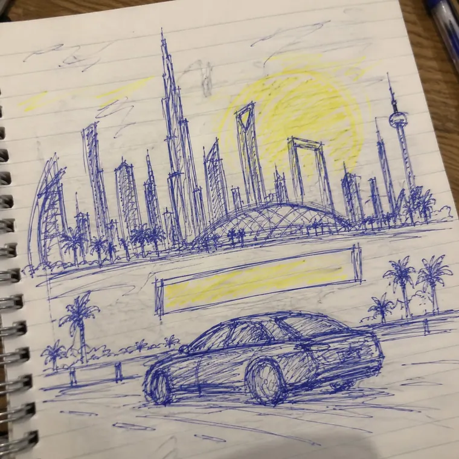

A social media campaign announcing a chauffeur service’s arrival in five international cities. One adaptable layout lets every city feel distinct while the series reads as a single brand.
Client
Altanfeethi
Role
Planning, structure and design
Scope
Social media series, 5 cities
AI tools
Magnific, Photoshop
Thecitychanges.Thepromisestays.
The objective
Launch a premium chauffeur service in five international cities with a clear luxury position.
The idea
The car and the message stay fixed while the skyline changes, so every post is news and part of one series.
Visual direction
Golden-hour skylines, a dark sedan and the copper mark: luxury, kept simple.
Stepbystep
From the first sketch to the final file.
Step 01
Sketch the layout
Pen and paper

Concept sketch
Car and road at the base, the message panel above them, the city filling the sky: the grid every post follows.
Step 02
Generate the cities
Magnific, Nano Banana Pro
RomeViennaAmmanNew York
Each skyline generated at the same golden hour and eye level, so it drops into the frame without retouching.
Step 03
Place and finish
Photoshop
Final post
The car, road and Arabic headline composited over the city, with the brand mark kept in one fixed position.
 Final post
Final post